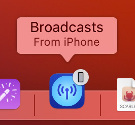
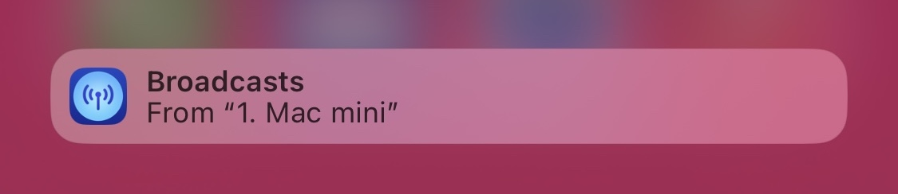

Handoff lets you quickly transfer your playback from one device to another, like from Apple Watch to Mac, or from iPhone to iPad.
When you begin playback of a station in Broadcasts, it gives it to Handoff to let other devices in your vicinity, logged into the same Apple ID, know.
On macOS, a new icon for Broadcasts will appear at the end of the Dock, with a badge depicting the currently-playing device. Clicking this icon will open Broadcasts, and will begin playback on your Mac.
On iPhone or iPad, Handoff is presented as a banner at the bottom of the App Switcher. Tapping this will transfer playback to Broadcasts.
For more information about Handoff, see "Use Handoff to continue tasks on your other devices".